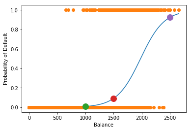

Classification Example¶
In [1]:
%matplotlib inline
import matplotlib.pyplot as plt
import numpy as np
import pandas as pd
from sklearn.linear_model import LogisticRegression
In [2]:
credit = pd.read_csv('data/default.csv')
In [3]:
credit.head()
Out[3]:
| default | student | balance | income | |
|---|---|---|---|---|
| 0 | No | No | 729.526495 | 44361.625074 |
| 1 | No | Yes | 817.180407 | 12106.134700 |
| 2 | No | No | 1073.549164 | 31767.138947 |
| 3 | No | No | 529.250605 | 35704.493935 |
| 4 | No | No | 785.655883 | 38463.495879 |
In [4]:
credit.info()
<class 'pandas.core.frame.DataFrame'>
RangeIndex: 10000 entries, 0 to 9999
Data columns (total 4 columns):
default 10000 non-null object
student 10000 non-null object
balance 10000 non-null float64
income 10000 non-null float64
dtypes: float64(2), object(2)
memory usage: 312.6+ KB
In [5]:
import seaborn as sns
In [6]:
plt.figure(figsize=(9, 4))
plt.subplot(121)
sns.boxplot(x = 'default', y = 'balance', data = credit)
plt.subplot(122)
sns.boxplot(x ='default', y = 'income', data = credit)
Out[6]:
<matplotlib.axes._subplots.AxesSubplot at 0x112cd2518>
In [7]:
colors=pd.get_dummies(credit.default, drop_first=True)
plt.scatter(credit.balance, credit.income, c = colors.Yes, cmap = 'jet', alpha = 0.3)
Out[7]:
<matplotlib.collections.PathCollection at 0x11310ccf8>
In [8]:
plt.plot(credit.balance, colors.Yes, 'o')
Out[8]:
[<matplotlib.lines.Line2D at 0x113182fd0>]
In [9]:
X= credit.balance.values.reshape(-1,1)
y = colors.Yes
clf = LogisticRegression()
clf.fit(X, y)
predict = clf.predict(X)
In [10]:
clf.intercept_
Out[10]:
array([-9.46506555])
In [11]:
clf.coef_
Out[11]:
array([[0.00478248]])
In [12]:
def lg(x): return 1/(1 + np.exp(clf.intercept_ + clf.coef_*x))
In [13]:
x = credit.balance.values.reshape(-1,1)
plt.plot(credit.balance, colors.Yes, 'o')
Out[13]:
[<matplotlib.lines.Line2D at 0x118d0e160>]

In [14]:
clf.predict(1000)
Out[14]:
array([0], dtype=uint8)
In [15]:
clf.predict_proba(1000)
Out[15]:
array([[0.99082984, 0.00917016]])
In [16]:
y = clf.predict_proba(credit.balance.values.reshape(-1,1))
In [17]:
plt.plot(np.sort(credit.balance), np.sort(y[:, 1]))
plt.plot(credit.balance, colors.Yes, 'o')
plt.plot(1500, clf.predict_proba(1500)[:, 1], 'o', markersize = 12)
clf.predict_proba(1500)[:, 1]
Out[17]:
array([0.09184194])
In [20]:
plt.plot(np.sort(credit.balance), np.sort(y[:, 1]))
plt.plot(credit.balance, colors.Yes, 'o')
plt.plot(1000, clf.predict_proba(1000)[:, 1], 'o', markersize = 12)
plt.plot(1500, clf.predict_proba(1500)[:, 1], 'o', markersize = 12)
plt.plot(2500, clf.predict_proba(2500)[:, 1], 'o', markersize = 12)
plt.xlabel('Balance')
plt.ylabel('Probability of Default')
print('Probability of default for someone with $1000 balance', clf.predict_proba(1000)[:, 1])
print('1500', clf.predict_proba(1500)[:, 1])
print('2500', clf.predict_proba(2500)[:, 1])
Probability of default for someone with $1000 balance [0.00917016]
1500 [0.09184194]
2500 [0.92351752]

KNN¶
In [21]:
from sklearn.neighbors import KNeighborsClassifier
In [22]:
knn = KNeighborsClassifier(n_neighbors=5)
X= credit['balance'].values.reshape(-1,1)
y = colors.Yes
knn.fit(X, y)
Out[22]:
KNeighborsClassifier(algorithm='auto', leaf_size=30, metric='minkowski',
metric_params=None, n_jobs=1, n_neighbors=5, p=2,
weights='uniform')
In [23]:
y2 = knn.predict(X)
In [24]:
y2
Out[24]:
array([0, 0, 0, ..., 0, 0, 0], dtype=uint8)
In [25]:
plt.scatter(credit['balance'], y2)
Out[25]:
<matplotlib.collections.PathCollection at 0x1193f2a20>
Student Status¶
In [26]:
credit.head()
Out[26]:
| default | student | balance | income | |
|---|---|---|---|---|
| 0 | No | No | 729.526495 | 44361.625074 |
| 1 | No | Yes | 817.180407 | 12106.134700 |
| 2 | No | No | 1073.549164 | 31767.138947 |
| 3 | No | No | 529.250605 | 35704.493935 |
| 4 | No | No | 785.655883 | 38463.495879 |
In [27]:
dummies = pd.get_dummies(credit.student, drop_first=True)
In [28]:
X = dummies['Yes'].values.reshape(-1,1)
In [29]:
X
Out[29]:
array([[0],
[1],
[0],
...,
[0],
[0],
[1]], dtype=uint8)
In [30]:
y = pd.get_dummies(credit.default,drop_first=True)['Yes']
In [31]:
clf.fit(X, y)
Out[31]:
LogisticRegression(C=1.0, class_weight=None, dual=False, fit_intercept=True,
intercept_scaling=1, max_iter=100, multi_class='ovr', n_jobs=1,
penalty='l2', random_state=None, solver='liblinear', tol=0.0001,
verbose=0, warm_start=False)
In [32]:
clf.intercept_
Out[32]:
array([-3.48496241])
In [33]:
clf.coef_
Out[33]:
array([[0.38256903]])
In [34]:
clf.predict_proba(0)
Out[34]:
array([[0.97025686, 0.02974314]])
In [35]:
clf.predict_proba(1)
Out[35]:
array([[0.95699136, 0.04300864]])